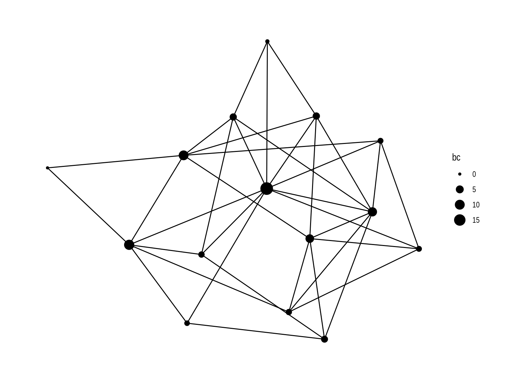
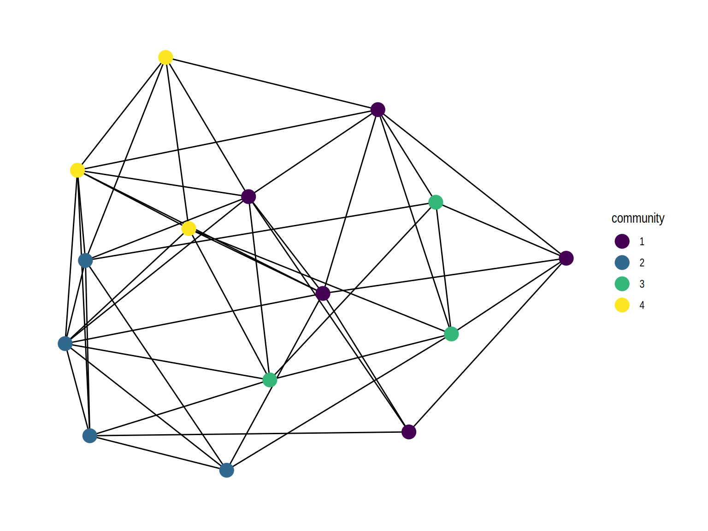
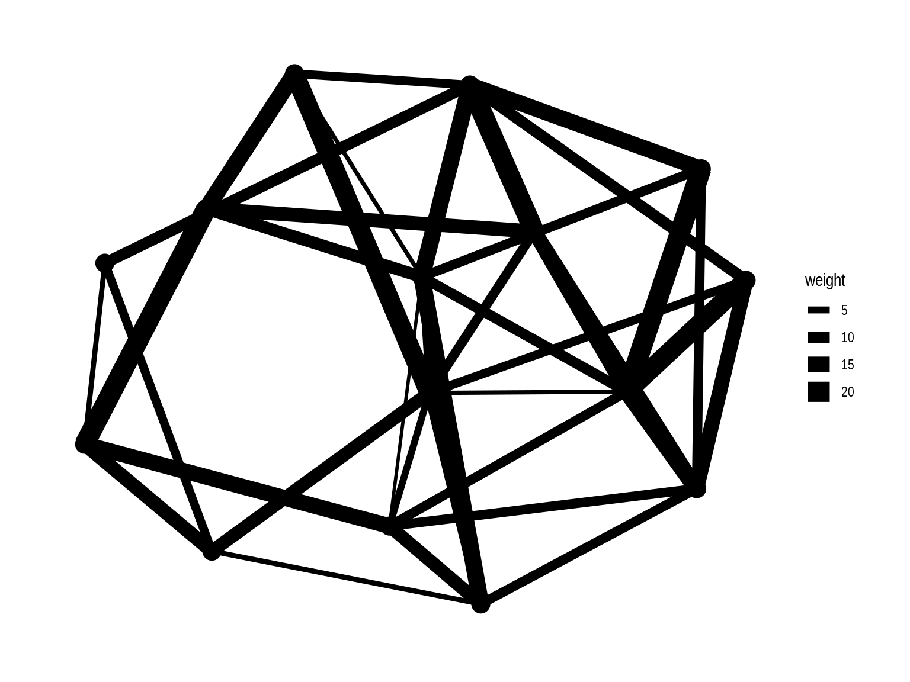
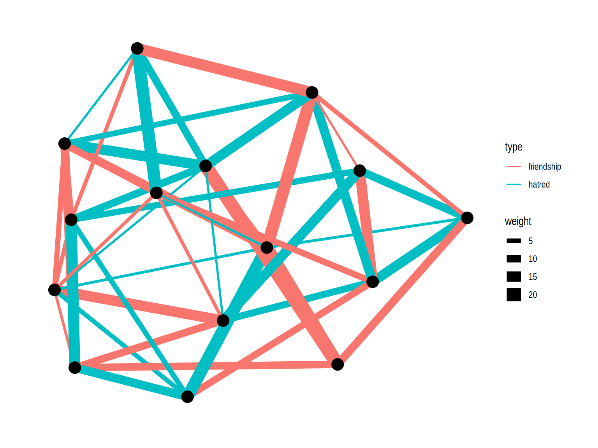
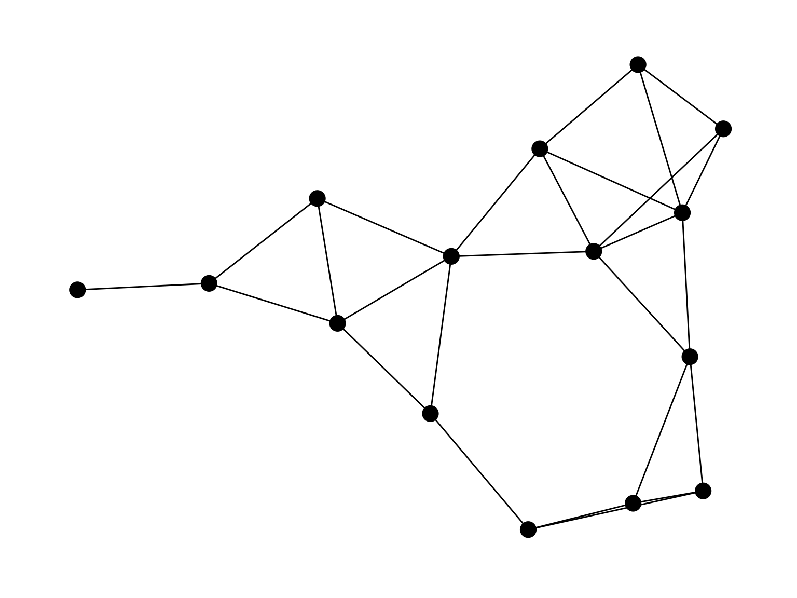
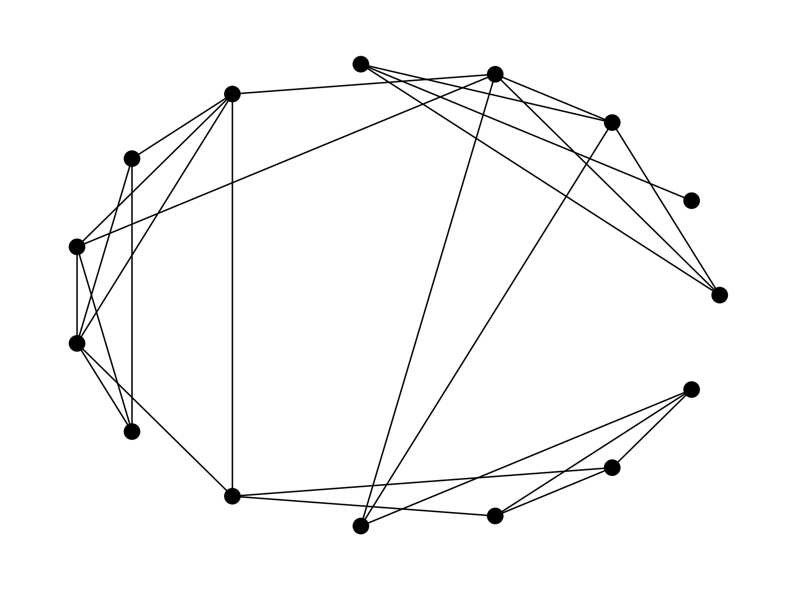
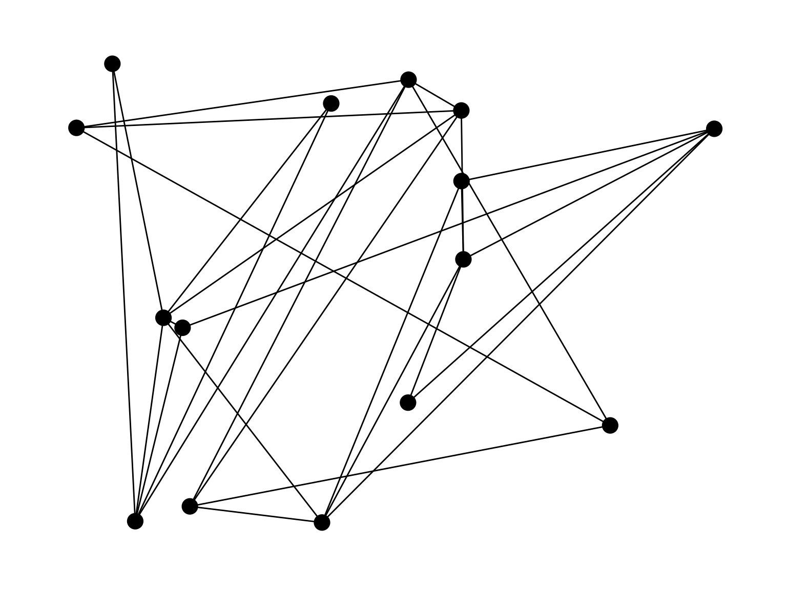
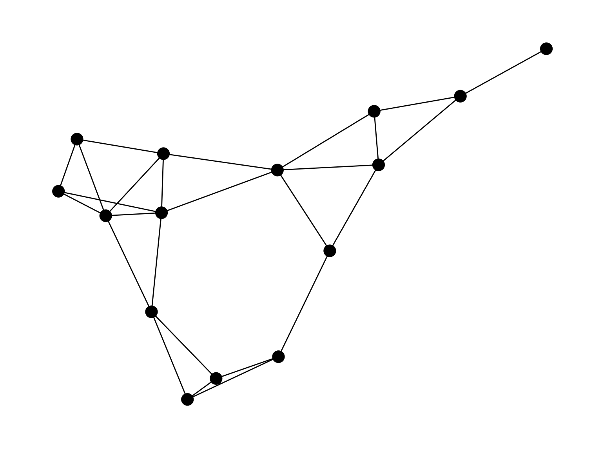

Network Visualization and Wrap Up
Today’s Dad Joke
Within minutes, the detective knew exactly what the murder weapon was.
It was a brief case.
Housekeeping
- Peer review
- Final project due Dec. 15
- Self Assessment Reflection due Dec. 15
- Initial grades on Brightspace
Network Visualizations
What are network visualizations good for?
- Uncover something about the structure of the network
- And usually how it relates to the attributes of its members
Aspects of visualizations
- Nodes
- Edges
- Location
Nodes
- Information can be conveyed by:
- Shape, size, color
- Shape
- Typically categorical (e.g., gender, age range)
- Size
- Often a network measure, but can be something about node
- Color
- Community detection or node attribute or network measure
Examples

With node shapes

Nodes sized by betweenness centrality

Nodes colored by community

Edges
- Size
- Typically represent weight of relationship
- Color
- Typically represents different types of relationships
Examples
Edge width as weight

Edge color as type

Position
- Can represent literal distance
- Cities
- Seating chart
- Or social distance
- Formal hierarchy
- Degree centrality
Node placement can make a big difference in how a network is perceived

What makes for a good network visualization?
Kozo Sugiyama’s rules:
- Lines should be straight.
- Lines should be far apart from one another.
- Lines should not cross or touch.
- Lines should be easy to follow from one node to another.
- Nodes that connect should be close.
- Nodes that are most central should be close to the center of the graph.
- Nodes that are similar in some way should be placed near one another.
Activity
Find and Assess a network visualization
- Use Google Images (or similar) to find an image of a network graphs.
- What do you think the image does well and poorly? Does it follow Sugiyama’s rules?
- Put the image (and your assessment) on the padlet at https://padlet.com/jdfoote1/networks (link is also on wiki)
Discussion
- Did you agree with Sugiyama’s rules?
- What types of color/shape/size approaches were effective?
- Did this make you want to change any visualizations for your final project?
Reflection
- What concepts have you found most compelling?
- How has the class changed your perspective?
Parting thoughts
- “We shape our [networks]; thereafter they shape us” - Churchill, paraphrased
- We are embedded in mostly invisible networks of influence
- Our beliefs, opportunities, and outcomes are not independently chosen or earned
- The choices we make may extend far beyond our vision
- Cultivate our social capital for good
- I am grateful for the edges created during our class. :)